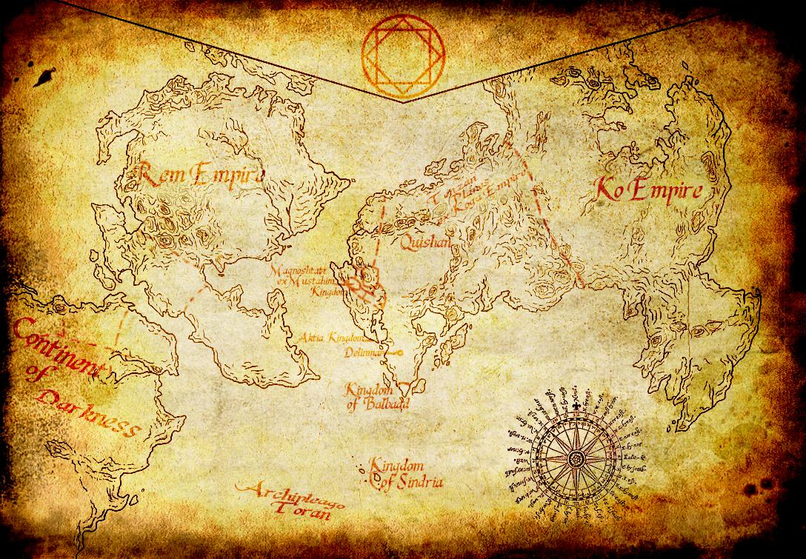
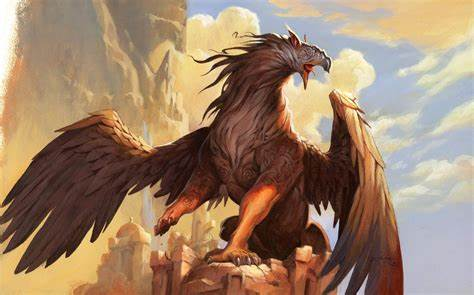

Plongez dans un monde sous-marin fascinant où se mêlent magie et mystère. Explorez des cités englouties, rencontrez des créatures légendaires et prenez part aux conflits qui agitent les profondeurs.
Bienvenue dans l'univers de Fruit de Mer
Histoire
Les Origines
Découvrez l'histoire millénaire des civilisations sous-marines et les événements qui ont façonné ce monde unique...
L'Âge d'Or
L'époque où les cités sous-marines prospéraient dans une harmonie parfaite...
Le Grand Conflit
La période tumultueuse qui a bouleversé l'équilibre des océans...
Factions
Les Gardiens des Abysses
Protecteurs ancestraux des secrets des profondeurs...
L'Alliance des Récifs
Communauté pacifique des eaux peu profondes...
Les Nomades des Courants
Explorateurs intrépides des océans...
Territoires

Des récifs coralliens aux abysses, explorez des environnements variés regorgeant de trésors et de dangers...
- Les Récifs de Corail
- La Cité Engloutie
- Les Fosses Abyssales
- Les Plaines Océaniques
Mystères des profondeurs

Les océans recèlent encore de nombreux secrets. Osez vous aventurer dans les zones inexplorées...